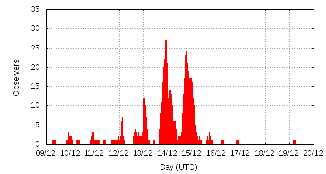

[ www.imo.net ]
This page shows automated results of the Geminids 2015, based on visual observations reported by citizen scientists through the report form of the International Meteor Organization (IMO). The information on this page is generated automatically; for scientific use please refer to manual analyses published in scientific journals (such as WGN). Send your feedback regarding this page to Geert Barentsen.
Page contents:
Note that the data will finally go into the Visual Meteor Database (VMDB) with manual inspection and rectifications. We are curretly completing the files of 2008-2011. The VMDB is an enormous project - any help will be greatly appreciated.
Page generated: 2016 March 3 at 21:42 UTC.
The graph below shows the ZHR (Zenithal Hourly Rate), which is the number of meteors an observer would see under a very dark sky with the radiant of the shower in zenith.
ZHRmax = 185 based on 11595 Geminids reported in 1115 intervals, assuming population index r = 2.0

| Time (UTC) | Solarlon | nINT | nGEM | ZHR | Particle density | |
|---|---|---|---|---|---|---|
| 2015-12-09 08:06 | 256.697 | 3 | 25 | 10 | ±2 | 16 / 109·km3 |
| 2015-12-10 00:16 | 257.381 | 6 | 21 | 5 | ±1 | 8 / 109·km3 |
| 2015-12-10 17:33 | 258.113 | 5 | 20 | 9 | ±2 | 14 / 109·km3 |
| 2015-12-11 05:35 | 258.623 | 5 | 31 | 11 | ±2 | 18 / 109·km3 |
| 2015-12-11 09:58 | 258.808 | 2 | 21 | 19 | ±4 | 30 / 109·km3 |
| 2015-12-11 18:08 | 259.154 | 6 | 25 | 15 | ±3 | 24 / 109·km3 |
| 2015-12-11 22:47 | 259.352 | 4 | 20 | 17 | ±4 | 27 / 109·km3 |
| 2015-12-12 00:45 | 259.435 | 4 | 20 | 15 | ±3 | 24 / 109·km3 |
| 2015-12-12 02:27 | 259.507 | 5 | 27 | 18 | ±3 | 29 / 109·km3 |
| 2015-12-12 03:26 | 259.548 | 15 | 49 | 10 | ±1 | 16 / 109·km3 |
| 2015-12-12 07:10 | 259.707 | 9 | 29 | 23 | ±4 | 37 / 109·km3 |
| 2015-12-12 16:33 | 260.104 | 2 | 20 | 38 | ±8 | 61 / 109·km3 |
| 2015-12-12 17:48 | 260.157 | 2 | 40 | 87 | ±14 | 139 / 109·km3 |
| 2015-12-12 19:13 | 260.217 | 1 | 33 | 55 | ±9 | 88 / 109·km3 |
| 2015-12-12 20:51 | 260.287 | 8 | 29 | 21 | ±4 | 33 / 109·km3 |
| 2015-12-13 00:26 | 260.438 | 9 | 92 | 35 | ±4 | 56 / 109·km3 |
| 2015-12-13 01:19 | 260.476 | 37 | 338 | 39 | ±2 | 62 / 109·km3 |
| 2015-12-13 02:16 | 260.516 | 36 | 350 | 46 | ±2 | 73 / 109·km3 |
| 2015-12-13 03:18 | 260.560 | 24 | 191 | 44 | ±3 | 70 / 109·km3 |
| 2015-12-13 04:12 | 260.598 | 14 | 66 | 35 | ±4 | 56 / 109·km3 |
| 2015-12-13 13:56 | 261.011 | 2 | 20 | 67 | ±15 | 107 / 109·km3 |
| 2015-12-13 17:43 | 261.171 | 5 | 34 | 65 | ±11 | 104 / 109·km3 |
| 2015-12-13 18:30 | 261.204 | 8 | 137 | 40 | ±3 | 64 / 109·km3 |
| 2015-12-13 19:39 | 261.253 | 18 | 151 | 56 | ±5 | 89 / 109·km3 |
| 2015-12-13 20:41 | 261.297 | 39 | 318 | 66 | ±4 | 105 / 109·km3 |
| 2015-12-13 21:39 | 261.337 | 64 | 633 | 64 | ±3 | 102 / 109·km3 |
| 2015-12-13 22:35 | 261.377 | 68 | 815 | 69 | ±2 | 110 / 109·km3 |
| 2015-12-13 23:29 | 261.415 | 43 | 602 | 80 | ±3 | 127 / 109·km3 |
| 2015-12-14 00:35 | 261.462 | 31 | 381 | 77 | ±4 | 123 / 109·km3 |
| 2015-12-14 01:41 | 261.509 | 24 | 408 | 95 | ±5 | 151 / 109·km3 |
| 2015-12-14 02:34 | 261.546 | 36 | 564 | 98 | ±4 | 156 / 109·km3 |
| 2015-12-14 03:38 | 261.591 | 30 | 342 | 84 | ±5 | 134 / 109·km3 |
| 2015-12-14 04:35 | 261.632 | 15 | 146 | 68 | ±6 | 108 / 109·km3 |
| 2015-12-14 05:44 | 261.680 | 11 | 140 | 63 | ±5 | 100 / 109·km3 |
| 2015-12-14 06:51 | 261.727 | 6 | 91 | 55 | ±6 | 88 / 109·km3 |
| 2015-12-14 07:52 | 261.771 | 13 | 162 | 84 | ±7 | 134 / 109·km3 |
| 2015-12-14 08:42 | 261.806 | 3 | 56 | 100 | ±13 | 159 / 109·km3 |
| 2015-12-14 12:26 | 261.964 | 2 | 20 | 181 | ±39 | 288 / 109·km3 |
| 2015-12-14 13:21 | 262.003 | 6 | 50 | 117 | ±16 | 186 / 109·km3 |
| 2015-12-14 14:16 | 262.042 | 7 | 99 | 185 | ±18 | 295 / 109·km3 |
| 2015-12-14 15:14 | 262.083 | 13 | 141 | 124 | ±10 | 198 / 109·km3 |
| 2015-12-14 16:25 | 262.133 | 13 | 212 | 125 | ±9 | 199 / 109·km3 |
| 2015-12-14 17:28 | 262.177 | 28 | 315 | 158 | ±9 | 252 / 109·km3 |
| 2015-12-14 18:27 | 262.219 | 61 | 621 | 115 | ±5 | 183 / 109·km3 |
| 2015-12-14 19:23 | 262.259 | 52 | 427 | 116 | ±6 | 185 / 109·km3 |
| 2015-12-14 20:27 | 262.304 | 64 | 603 | 84 | ±3 | 134 / 109·km3 |
| 2015-12-14 21:20 | 262.341 | 33 | 365 | 69 | ±4 | 110 / 109·km3 |
| 2015-12-14 22:31 | 262.391 | 25 | 239 | 76 | ±5 | 121 / 109·km3 |
| 2015-12-14 23:32 | 262.435 | 39 | 414 | 105 | ±5 | 167 / 109·km3 |
| 2015-12-15 00:30 | 262.476 | 43 | 543 | 66 | ±3 | 105 / 109·km3 |
| 2015-12-15 01:31 | 262.519 | 37 | 394 | 65 | ±3 | 104 / 109·km3 |
| 2015-12-15 02:24 | 262.556 | 27 | 284 | 75 | ±4 | 119 / 109·km3 |
| 2015-12-15 03:37 | 262.608 | 13 | 113 | 69 | ±6 | 110 / 109·km3 |
| 2015-12-15 04:34 | 262.648 | 16 | 130 | 80 | ±7 | 127 / 109·km3 |
| 2015-12-15 05:28 | 262.686 | 6 | 62 | 57 | ±7 | 91 / 109·km3 |
| 2015-12-15 06:51 | 262.745 | 3 | 32 | 30 | ±5 | 48 / 109·km3 |
| 2015-12-15 08:15 | 262.804 | 4 | 28 | 49 | ±9 | 78 / 109·km3 |
| 2015-12-15 09:30 | 262.857 | 2 | 20 | 68 | ±15 | 108 / 109·km3 |
| 2015-12-15 16:48 | 263.166 | 2 | 22 | 27 | ±6 | 43 / 109·km3 |
| 2015-12-16 06:23 | 263.742 | 2 | 11 | 6 | ±2 | 10 / 109·km3 |
| 2015-12-16 21:01 | 264.363 | 3 | 2 | 15 | ±9 | 24 / 109·km3 |
| 2015-12-19 04:42 | 266.724 | 1 | 1 | 3 | ±2 | 5 / 109·km3 |
The reported intervals are automatically added together into the bins shown above, based on the number of meteors and the distribution of the intervals. For each bin, the following parameters are computed:
Data has been received from 98 observers in 32 countries. Thank you for your efforts!
Note: click on the map for an interactive version.

| Observer | Country | Teff | nGEM |
|---|---|---|---|
| Amorim Alexandre | Brazil | 0.96h | 1 |
| Mikael Anderlund | Sweden | 1.50h | 64 |
| Rainer Arlt | Germany | 1.02h | 35 |
| Stela Arlt | Germany | 0.80h | 36 |
| Marina Arnaut | Serbia | 1.33h | 46 |
| Jerald Barnhardt | United States | 0.46h | 86 |
| Ilija Bogdanovic | Serbia | 4.04h | 206 |
| Ljubomir Brankovic | Serbia | 12.66h | 641 |
| Andreas Buchmann | Switzerland | 2.00h | 65 |
| David Buzgo | Serbia | 9.2h | 539 |
| Lucas Camargo Da Silva | Brazil | 1.25h | 5 |
| Yingyi Cao | China | 3.96h | 102 |
| Seokhee Cho | South Korea | 1.00h | 17 |
| Enrique De Ferra Fantin | Spain | 1.49h | 44 |
| Teodora Demirova | Bulgaria | 9.11h | 84 |
| Mayuresh Desai | India | 9.16h | 460 |
| Milica Dodevski | Serbia | 2.95h | 81 |
| John Drummond | New Zealand | 0.99h | 44 |
| Yixing Gao | China | 1.25h | 41 |
| Chenyang Ge | China | 1h | 47 |
| Wei Ge | China | 3.00h | 232 |
| Arijit Gupta | India | 2.84h | 24 |
| Sepideh Haghighi | Iran | 1.92h | 25 |
| Robin Hegenbarth | Germany | 1.15h | 14 |
| Carl Hergenrother | United States | 1.27h | 82 |
| Gabriel Hickel | Brazil | 0.92h | 6 |
| Yandong Hu | China | 1.00h | 60 |
| Sam Insana | United States | 1.50h | 81 |
| Iva Ivanova | Bulgaria | 8.83h | 273 |
| Carl Johannink | Germany | 5.42h | 238 |
| Mandar Karandikar | India | 2.49h | 27 |
| Roy Keeris | Netherlands | 1.73h | 76 |
| Ralf Koschack | Germany | 4.34h | 247 |
| Irina Kurteva | Bulgaria | 6.85h | 36 |
| Nilofar Kurawle | India | 4.15h | 78 |
| Hitesh Lala | India | 3.70h | 126 |
| Dengbing Lei | China | 1h | 55 |
| Adrian Lelyen Fernández | Cuba | 2.97h | 44 |
| Gang Li | China | 1.41h | 63 |
| Mike Linnolt | United States | 0.67h | 37 |
| Hartwig Luethen | Germany | 1.80h | 31 |
| Caslav Lukic | Serbia | 9.89h | 600 |
| Desheng Ma | China | 1.03h | 4 |
| Desheng Ma | China | 1.95h | 25 |
| Milica Maletic | Serbia | 10.43h | 644 |
| Adam Marsh | Australia | 2.95h | 76 |
| István Mátis | Romania | 0.97h | 40 |
| Alastair Mcbeath | United Kingdom | 0.58h | 7 |
| Xiangxi Meng | China | 1.47h | 23 |
| Frederic Merlin | France | 0.77h | 48 |
| Artem Mirgorod | Ukraine | 0.77h | 2 |
| Sirko Molau | Germany | 3.01h | 171 |
| Kartik Neralwar | India | 1.70h | 11 |
| Michael Nolle | Malta | 1.23h | 38 |
| Yogesh Pandey | India | 1.00h | 16 |
| Tilaksingh Pawar | India | 5.25h | 130 |
| Pedro Perez | Spain | 3.01h | 62 |
| Pedro PÉrez | Spain | 4.18h | 214 |
| Pedro Perez Corujo | Spain | 1.77h | 21 |
| Nastasija Petkovic | Serbia | 3.83h | 196 |
| Nilesh Puntambekar | India | 0.25h | 0 |
| Antonija Radulovic | Serbia | 4.59h | 273 |
| Pradnya Raje | India | 6.38h | 60 |
| Divyanshu Ranjan | India | 3.48h | 134 |
| Jatin Rathod | India | 1.76h | 133 |
| Mileny Roche Lamas | Cuba | 2.39h | 33 |
| Miguel Rodriguez-alarcon | Spain | 2.76h | 117 |
| Mirco Saner | Switzerland | 2.75h | 57 |
| Wei Shi | China | 0.75h | 9 |
| Fujie Tang | China | 1.45h | 29 |
| Hanjie Tan | China | 1.33h | 15 |
| Alexandru Tehanciuc | Romania | 1.07h | 63 |
| Istvan Tepliczky | Hungary | 2.37h | 42 |
| Tunç Tezel | Turkey | 1.00h | 42 |
| Sonal, Atharva, Chaitanya Thorve, Wangikar, Kulkarni | India | 1.00h | 12 |
| Sonal Thorve | India | 3.06h | 64 |
| Terrence Ross | United States | 13.87h | 338 |
| Sasha Prokofyev | Russia | 3.14h | 132 |
| Christoph Gerber | Germany | 3.97h | 136 |
| Branislav Savic | Serbia | 9.32h | 486 |
| Anna Levin | Israel | 15.77h | 455 |
| Ljubica Grasic | Serbia | 3.89h | 314 |
| Snezana Todorovic | Serbia | 11.77h | 696 |
| Orlando Benítez Sánchez | Spain | 3.55h | 121 |
| Jurgen Rendtel | Germany | 7.17h | 104 |
| Karoly Jonas | Hungary | 8.26h | 167 |
| Pierre Bader | Germany | 2.20h | 41 |
| Salvador Aguirre | Mexico | 0.25h | 5 |
| Qiang Ma | China | 1.50h | 22 |
| Shigeo Uchiyama | Japan | 1.50h | 20 |
| Tamara Tchenak | Israel | 15.51h | 638 |
| Roman Kovalyk | Italy | 2.00h | 5 |
| Oliver Wusk | Germany | 12.18h | 192 |
| Ina Rendtel | Germany | 2.19h | 30 |
| Bruce Mccurdy | Canada | 2.31h | 56 |
| Kai Schultze | Germany | 2.66h | 74 |
| Javor Kac | Slovenia | 5.73h | 160 |
| Ann Levin | Israel | 1.91h | 20 |
| Valentin Velkov | Bulgaria | 3.34h | 53 |
| Xiaofan Wei | China | 0.50h | 8 |
| Oliv+ Wusk | Germany | 2.85h | 21 |
| Zesheng Yang | China | 2.94h | 101 |
| Tianwenshe Yizhong | China | 2.46h | 134 |
| Yizhi Zhou | China | 1.25h | 70 |
Create your own analysis. The files below can be opened using Excel:
gem2015_rate.csv (number of meteors per interval per observer)
gem2015_magn.csv (number of meteors per magnitude bin per observer)
The information on this page may be distributed freely provided credit is given to the International Meteor Organization (IMO) and, when possible, to the individual observers. The computer facilities to generate this page are provided by ESA/RSSD and Armagh Observatory.
References: